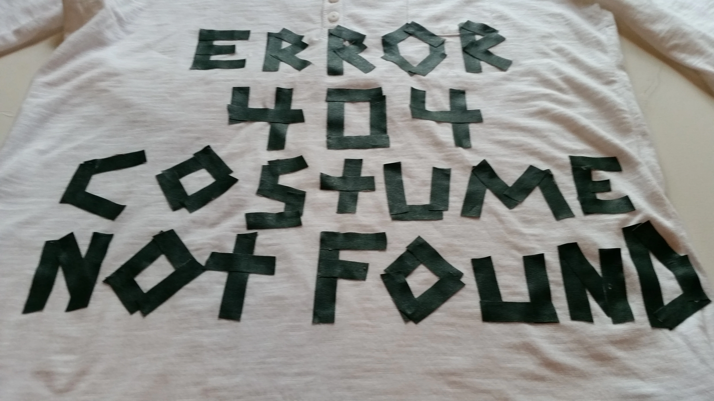

College students usually have three different Halloween costumes every year. With this rather large number, I was having a hard time finding Halloween costumes. I decided to ask Gemini to help me brainstorm costumes. Here is how the conversation went:
USER
- Can you help me brainstorm ideas for a Halloween costume?
ASSISTANT
Okay, let’s get those creative juices flowing! To give you the best ideas, I’ll start with some guiding questions to help us narrow things down, and then we’ll dive into categories of suggestions.
First, let’s answer a few questions about your costume goals:
- What’s the Vibe You’re Going For? (Choose one or a few)
- Scary / Spooky
- Funny / Silly
- Cute / Charming
- Clever / Punny
- Impressive / Elaborate
- Relaxed / Easy
- Trendy / Pop Culture
- Classic Halloween
- What’s Your Effort/Budget Level?
- Minimal: Something I can mostly pull from my closet or buy one cheap accessory.
- Moderate: Willing to buy a few items, do some simple DIY, or spend a bit on a costume kit.
- High: Ready to craft, do elaborate makeup, or invest in a detailed costume.
- Who is the Costume For?
- Just me (solo)
- Me and a partner (couple)
- Me and a group of friends/family (group)
- (If a couple/group, what kind of dynamic do you want? Matching, complementary, opposing?)
- What’s the Occasion?
- Trick-or-treating (need to be able to walk easily)
- House party (dancing, eating, sitting)
- Work event (professional, appropriate)
- Casual gathering
- Just for fun at home!
- Any specific interests or things you love? (e.g., specific movies, TV shows, video games, historical periods, animals, food, memes?)
Brainstorming Categories & Ideas (General):
Based on common preferences, here are some broad categories and examples. Let me know which ones resonate, and we can go deeper!
I. Pop Culture & Trending:
- Movies/TV Shows:
- Barbie & Ken: (Classic pink, Western Barbie, Rollerblade Barbie, President Barbie, Weird Barbie)
- Oppenheimer/Atomic Bomb: (J. Robert Oppenheimer, Kitty Oppenheimer, “Fat Man” or “Little Boy” bomb)
- Wednesday Addams: (Classic dress, Nevermore Academy uniform)
- Mario Bros. Movie: (Mario, Luigi, Peach, Bowser, Toad, Koopa Troopa)
- Taylor Swift Eras: (Each “era” is a costume in itself!)
- “Quiet Luxury” / Succession Characters: (Subtle, expensive-looking outfits)
- Marvel/DC Characters: (Spider-Man, Wonder Woman, Loki, Scarlet Witch)
- Classic Horror Icons: (Ghostface, Michael Myers, Freddy Krueger, Jason Voorhees, Chucky)
- Stranger Things: (Eddie Munson, Vecna, Eleven, Demogorgon)
- Memes/Internet Culture:
- “Distracted Boyfriend” meme: (3 people)
- Doge: (Shiba Inu dog)
- AI Robot: (Futuristic, metallic, maybe a glitching screen)
- Grumpy Cat
- Video Games:
- Zelda: (Link, Zelda)
- Pokemon: (Ash, Pikachu, specific Pokemon)
- Minecraft: (Blocky characters)
II. Punny & Clever:
- Holy Guacamole! (Angel wings + avocado)
- Deviled Egg: (Red horns/tail + egg costume or white clothes)
- Identity Thief: (Name tags with random names + “THIEF” written on a shirt)
- Nudist on Strike: (Robe/towel + picket sign)
- Error 404: Costume Not Found: (Simple shirt with text)
- Smarty Pants: (Pants covered in Smarties candy wrappers)
- When Life Gives You Lemons… (Lemon costume + “LIFE” written on a shirt)
- Social Butterfly: (Butterfly wings + social media logos pinned on)
III. Classic Halloween:
- Witch: (Good, evil, glam, rustic)
- Vampire: (Classic, modern, gothic)
- Ghost: (Sheet ghost, Victorian ghost, headless horseman)
- Zombie: (Classic, specific profession zombie like a nurse zombie)
- Skeleton: (Painted, costume suit)
- Devil / Demon
- Mummy
- Werewolf
- Black Cat
IV. Funny & Silly:
- Giant Food Item: (Hot dog, taco, banana, slice of pizza, donut)
- Animal Onesie: (Dinosaur, unicorn, sloth, bear)
- Inflatable Costume: (T-Rex, sumo wrestler, alien abduction)
- Tourist: (Hawaiian shirt, camera, fanny pack, map)
- Crazy Cat Lady/Gentleman
- Laundry Basket: (Wear a laundry basket with some clothes inside)
- Rubik’s Cube
V. DIY & Low Effort (often from your closet):
- Mime: (Striped shirt, black pants, suspenders, white face paint)
- Scarecrow: (Flannel, jeans, straw hat, burlap, face paint stitches)
- Rosie the Riveter: (Denim shirt, red bandana with polka dots)
- Artist: (Beret, smock, paint palette)
- Bank Robber: (Striped shirt, black mask, money bag)
- “Formal Apology”: (Suit/formal wear + “I’M SORRY” sign)
- Grapes: (Purple/green clothes + balloons pinned on)
VI. Couples & Group Costumes:
- Classic Duos: (Salt & Pepper, Peanut Butter & Jelly, Plug & Socket, Milk & Cookies, Mario & Luigi, Barbie & Ken)
- Movie/TV Groups: (Ghostbusters, Addams Family, Scooby-Doo gang, Superheroes, T-Birds & Pink Ladies)
- Concepts: (Four Seasons, Rock-Paper-Scissors, M&Ms, Deck of Cards)
- Food Pairings: (Ketchup & Mustard, Bacon & Eggs)
Once you give me some answers to the initial questions, or tell me which categories spark your interest, I can give you much more specific and tailored ideas!
USER
I am going for a funny and silly vibe with minimal effort. It will be just me and I will be going to a house party.
ASSISTANT
Okay, this is my favorite kind of challenge! Funny, silly, minimal effort, solo, house party. Let’s get you some laughs with minimal stress.
Here are some ideas that fit the bill perfectly:
Top Picks for Funny, Silly, & Minimal Effort:
- Error 404: Costume Not Found
- How: Wear your regular clothes. Get a plain t-shirt (or wear a white one you already own) and write “Error 404: Costume Not Found” on it with a marker.
- Why it works: It’s meta, self-aware, and gets a chuckle for its sheer simplicity and cleverness. Absolute minimal effort.
- Identity Thief
- How: Wear your normal clothes. Buy a pack of “Hello My Name Is…” sticky name tags. Write a different, random name on each one (e.g., “Bob,” “Susan,” “Elvis,” “Napoleon Dynamite”) and stick them all over your shirt, pants, and even face. For extra credit, make a small sign that says “THIEF” and pin it somewhere.
- Why it works: It’s a visual pun, easy to assemble, and always gets a laugh.
- Nudist on Strike
- How: Wear a bathrobe (or wrap a towel securely around yourself over your clothes) and perhaps some flip-flops. Carry a small sign (cardboard or paper) that says “NUDIST ON STRIKE.”
- Why it works: It’s inherently silly and unexpected. The sign makes it clear and adds to the humor.
- Static Cling
- How: Wear mismatched clothes. Gather some random items like socks, underwear (clean ones, please!), dryer sheets, a small stuffed animal, or even a plastic bag. Safety pin or tape them haphazardly to your clothes. Messy, unkempt hair completes the look.
- Why it works: It’s visually chaotic and instantly recognizable as a “laundry day” mishap. Super funny and easy to pull from around the house.
- A “Deviled Egg”
- How: Wear all white clothes (a white shirt and pants/skirt). Buy a cheap pair of red devil horns and a small red tail (you can even make a tail out of red felt or paper and pin it).
- Why it works: It’s a classic, simple pun costume. Easy to put together and instantly gets the “aha!” moment.
- Ceiling Fan
- How: Get a plain t-shirt and write “CEILING” on it with a marker. Then, attach a small fan to yourself – this could be a paper hand fan taped to your head, a small battery-operated fan clipped to your shirt, or even just a drawing of a fan pinned on.
- Why it works: Another great pun that’s simple, clever, and gets a chuckle.
- Crazy Cat Person
- How: Wear comfy, slightly disheveled clothes (a robe or old sweater works well). Attach a few small stuffed cats (or print out pictures of cat faces and pin them) to your clothes. Messy hair, maybe some reading glasses, and a slightly bewildered expression complete the look.
- Why it works: It’s a universally understood trope, easy to create, and inherently silly.
- Tourist
- How: Hawaiian shirt (borrow or thrift), a fanny pack, socks with sandals, a camera around your neck, maybe a wide-brimmed hat or a visor. Carry a map or a guide book.
- Why it works: You can likely pull most of this from your closet or a friend’s. It’s a funny, recognizable stereotype.
Which of these sounds most appealing? Or do any of them spark a slightly different idea? Let me know!
USER
Out of these, which one do you think would be the easiest to put together last minute?
ASSISTANT
Okay, for absolute easiest to put together last minute from that list, requiring the fewest specific items and no special shopping trip, I’d say it’s a tie between:
- Error 404: Costume Not Found
- Nudist on Strike
Here’s why:
- Error 404: Costume Not Found
- What you need: Your regular clothes, a plain t-shirt (white is ideal), and a marker.
- Why it’s easiest: You almost certainly have a plain t-shirt and a marker in your house. It takes literally 2 minutes to write on the shirt. No rummaging for specific props.
- Nudist on Strike
- What you need: A bathrobe (or large towel), maybe flip-flops, a piece of paper/cardboard, and a marker.
- Why it’s easiest: Most people have a bathrobe or a towel, and paper/marker are common. Making the sign is quick.
If I had to pick just ONE for absolute minimal fuss, it would be “Error 404: Costume Not Found.” You don’t even need to find a specific “prop” like a bathrobe; you just need a t-shirt and a writing implement.
Both are excellent choices for funny, silly, and super last-minute!
Reflection
This was a fun conversation! I was excited to see how Gemini started the conversation by asking me what type of costume I was looking for. I was expecting the LLM to start providing ideas right off the bat. I was also shocked to see Gemini talk more colloquially, using words like “vibes” and having a strong knowledge of popular culture. The ideas for the Halloween costumes were not original, though, and I was disappointed that the final idea was just wearing a “Error 404: Costume Not Found” sign over a regular outfit. While this was a fun exercise, I will not be using an LLM to help me decide my Halloween costume next year.